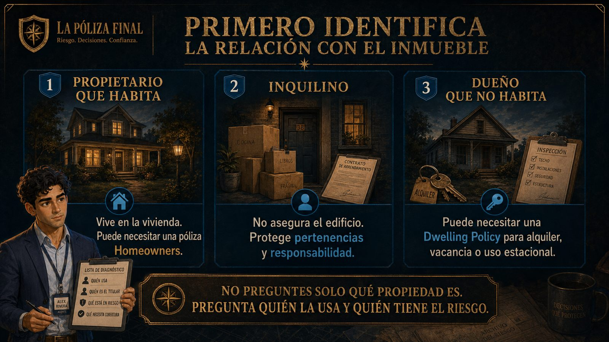
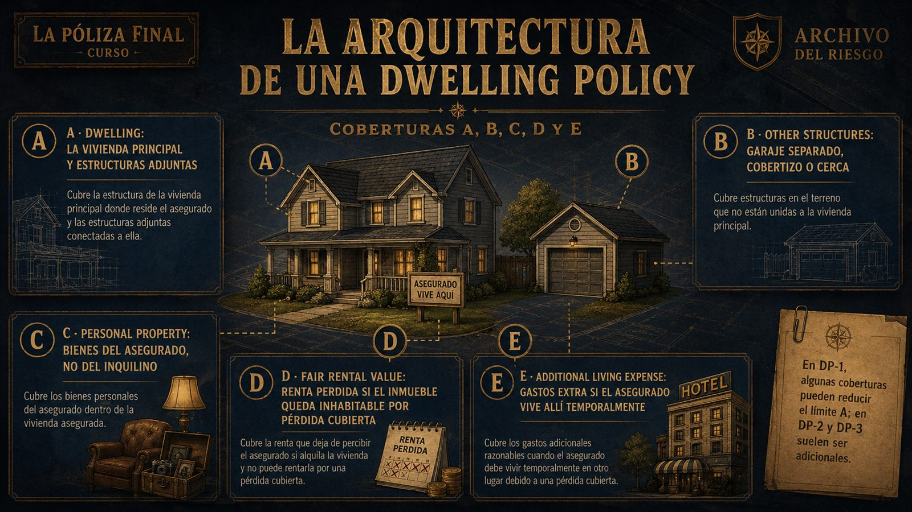
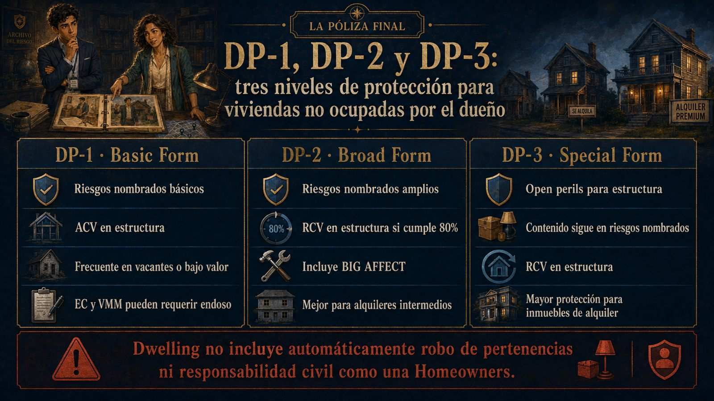
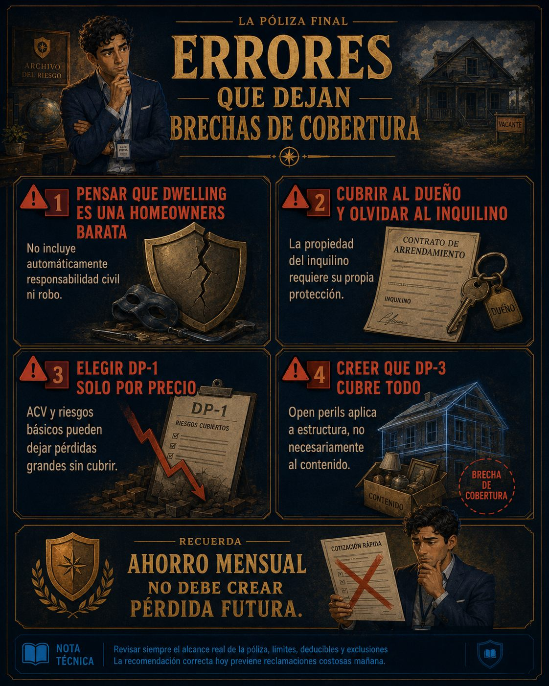

Dwelling Policies: primero identifica quién tiene el riesgo
Una vivienda puede parecer la misma desde afuera, pero no representa el mismo riesgo para un propietario que vive allí,
un inquilino, un arrendador o una persona que conserva una casa desocupada. En esta lección vas a aprender cuándo
pensar en DP-1, DP-2 y DP-3.
El primer paso no es escoger la póliza más barata. Es identificar quién necesita protección y qué relación tiene con el inmueble.
1. Relación con el inmueble
Propietario ocupante, inquilino y dueño que no habita enfrentan riesgos distintos.
2. Dwelling Policies
DP-1, DP-2 y DP-3 protegen viviendas que no encajan en una Homeowners estándar.
3. Costo vs. brecha
Ahorrar prima puede ser peligroso si se elimina una cobertura que el cliente sí necesitaba.
VIDEO DE LA LECCIÓN
Tipos de pólizas de vivienda
Reproduce el video cuando estés listo para comenzar la ruta de estudio.
🎬
Aquí se reproduce el video de la lecciónEl video existe y acompaña esta lección en la academia real — pero es propiedad del cliente y sus derechos se respetan. El video de tu academia va a quedar igual de bien, y ese sí será tuyo.
El segundo expediente
La Ajustadora dejó sobre la mesa dos carpetas nuevas. En la primera, una persona rentaba una vivienda
y quería proteger “lo suyo”. En la segunda, una dueña conservaba una casa que no habitaba.
Alex estuvo a punto de responder con una póliza conocida, pero Luna lo detuvo antes de que hablara.
No era el mismo riesgo. No era la misma necesidad. Y una recomendación rápida podía dejar desprotegido
a alguien que solo quería ahorrar unos dólares al mes.
“No preguntes solo qué propiedad es. Pregunta quién la usa, quién la posee y quién perdería si algo ocurre.”
Luna le muestra a Alex que el precio bajo no protege si el formulario no corresponde al riesgo.
Antes de hablar de DP-1, DP-2 o DP-3, separa a las personas
El error común es decir “es una casa, entonces necesita una póliza de casa”. En seguros, eso no basta.
Debes identificar si la persona vive allí, renta la vivienda, la alquila a otros o mantiene una propiedad
vacante, estacional o en remodelación.

La relación con el inmueble cambia la póliza adecuada: no es lo mismo habitar, rentar o poseer sin vivir allí.
Propietario que habita
Vive en la vivienda
Normalmente se analiza una póliza Homeowners, porque el asegurado ocupa la vivienda como residencia
y necesita estructura, contenido, responsabilidad y pérdida de uso en un paquete.
Inquilino
No asegura el edificio
El inquilino necesita proteger sus pertenencias y su responsabilidad civil. La estructura pertenece al dueño,
por lo que una póliza de propietario no cubre automáticamente las cosas del inquilino.
Dueño que no habita
Puede necesitar Dwelling
Si el dueño no vive en la propiedad, puede necesitar una Dwelling Policy, especialmente si la alquila,
la mantiene vacante, la usa por temporada o está en renovación.
Idea profesional
Las Dwelling Policies no son simplemente “Homeowners baratas”. Son instrumentos de propiedad para situaciones
donde la ocupación y el uso del inmueble cambian el riesgo.
Qué es una Dwelling Policy
Una Dwelling Policy está diseñada para cubrir estructuras residenciales que no califican bien para una póliza
estándar de propietarios. Puede usarse para viviendas alquiladas, vacantes, estacionales, de bajo valor o en
construcción o rehabilitación.
Lo que sí resuelve
Protege la estructura residencial
Su centro es la propiedad: la vivienda, otras estructuras, algunos bienes del asegurado, renta perdida
y gastos adicionales según el formulario y las coberturas elegidas.
Lo que no debes asumir
No siempre viene en paquete
A diferencia de muchas Homeowners, una Dwelling Policy no incluye automáticamente robo de pertenencias
ni responsabilidad civil personal. Esas protecciones pueden requerir endosos o pólizas separadas.
✓
Pregunta clave: ¿el dueño vive en la vivienda o la propiedad se usa para alquiler, temporada, vacancia o inversión?
✓
Riesgo comercial: una póliza más barata puede dejar brechas importantes si el cliente necesita responsabilidad civil o robo.
✓
Riesgo de examen: no confundas una Dwelling Policy con una Homeowners completa.
La arquitectura de una Dwelling Policy
Antes de comparar DP-1, DP-2 y DP-3, necesitas entender sus coberturas principales. No todas funcionan igual
en todos los formularios, pero estas letras te ayudan a leer la estructura de la póliza.

Las coberturas A, B, C, D y E explican qué parte del riesgo se está protegiendo.
Cobertura
Nombre
Qué protege
Ejemplo práctico
Coverage A
Dwelling
La vivienda principal y estructuras adjuntas.
La casa de alquiler sufre daños por incendio.
Coverage B
Other Structures
Estructuras separadas, como garaje independiente, cobertizo o cerca.
Un árbol cae sobre un garaje separado.
Coverage C
Personal Property
Bienes del asegurado, no del inquilino.
Refrigerador del dueño dentro de la propiedad rentada.
Coverage D
Fair Rental Value
Renta que el dueño deja de cobrar si el inmueble queda inhabitable por una pérdida cubierta.
El incendio cubierto obliga al inquilino a mudarse temporalmente.
Coverage E
Additional Living Expense
Gastos adicionales si el asegurado reside allí y debe vivir temporalmente en otro lugar.
Una casa estacional ocupada por el asegurado queda inhabitable por una pérdida cubierta.
DP-1, DP-2 y DP-3: tres niveles de protección
Ahora sí podemos comparar. DP-1, DP-2 y DP-3 no se diferencian solo por precio. Cambian por los riesgos
cubiertos, la forma de valorar pérdidas y el nivel de protección para estructura y contenido.

DP-1 es básico, DP-2 amplía riesgos nombrados y DP-3 ofrece riesgos abiertos para la estructura.
Característica
DP-1 Basic
DP-2 Broad
DP-3 Special
Uso típico
Vacantes, bajo valor o necesidad de costo mínimo.
Alquileres de nivel medio o propiedades que requieren mejor protección.
Propiedades de alquiler de mayor valor o mejor condición.
Riesgos en estructura
Riesgos nombrados básicos.
Riesgos nombrados amplios.
Open perils, salvo exclusiones.
Valoración estructura
Normalmente Actual Cash Value.
Replacement Cost si cumple requisitos, como el 80% de valor asegurable.
Replacement Cost si cumple requisitos aplicables.
Contenido
Limitado y usualmente ACV.
Riesgos nombrados amplios, usualmente ACV.
Contenido en riesgos nombrados, no open perils.
Error común
Olvidar que viento, vandalismo u otros riesgos pueden requerir endoso.
Creer que “burglary damage” cubre el objeto robado.
Creer que DP-3 cubre todo, incluida inundación o contenido en open perils.
DP-1 Basic Form: barato, pero muy limitado
El DP-1 es la forma más básica. Puede servir para propiedades vacantes, de bajo valor o situaciones donde el costo
mínimo sea una prioridad, pero sus brechas pueden ser grandes.
Riesgos básicos
Fire, Lightning, Internal Explosion
De forma básica, el DP-1 cubre incendio, rayo y explosión interna. Otros riesgos pueden requerir Extended Coverage.
ACV
Depreciación incluida
El DP-1 suele pagar en Actual Cash Value: costo de reemplazo menos depreciación por edad y desgaste.
Endosos
EC y VMM
Extended Coverage puede añadir riesgos como viento, granizo y humo. Vandalism or Malicious Mischief suele requerir EC primero.
Ejemplo rápido
Una casa vacante con DP-1 básico sufre daño por viento. Si no se compró Extended Coverage, el reclamo puede ser denegado
porque viento no pertenece a los tres riesgos básicos.
DP-2 Broad Form: más riesgos nombrados y mejor valoración
El DP-2 sigue siendo una póliza de riesgos nombrados, pero su lista es mucho más amplia. Además, puede pagar la estructura
a Replacement Cost si se cumple el requisito de asegurar al menos el 80% del valor de reemplazo.
BIG AFFECT
Riesgos adicionales
DP-2 añade riesgos como daño por ladrones a la estructura, peso de hielo o nieve, rotura de vidrios,
descarga accidental de agua, objetos que caen, congelación de tuberías, daño eléctrico, colapso y tearing asunder.
80%
Insurance-to-value
Para recibir Replacement Cost en la estructura, el asegurado debe cumplir el requisito de valor asegurable.
Si asegura por debajo del umbral, una pérdida parcial puede pagarse de forma reducida.
✓
Para examen: DP-2 es Broad Form, riesgos nombrados amplios y estructura a Replacement Cost si cumple condiciones.
✓
Trampa: Burglary damage cubre daños causados por ladrones a la estructura, no necesariamente los bienes robados.
DP-3 Special Form: estructura en open perils
El DP-3 es el formulario más amplio dentro de las Dwelling Policies. Su rasgo principal es que cubre la estructura
bajo open perils, pero eso no significa que todo esté cubierto.
Coverage A y B
Open perils
La vivienda y otras estructuras se cubren contra pérdidas físicas directas salvo que la causa esté excluida.
Coverage C
Contenido sigue limitado
La propiedad personal en DP-3 normalmente sigue en riesgos nombrados, similares a DP-2, y suele pagarse a ACV.
Exclusiones
No cubre todo
Inundación, movimiento de tierra, negligencia, guerra, peligro nuclear y daño intencional siguen siendo exclusiones críticas.
Ejemplo rápido
Si una tormenta de granizo daña el techo de una propiedad alquilada con DP-3, la estructura puede estar cubierta por open perils.
Pero si una inundación del río causa el daño, la exclusión de agua puede impedir la cobertura.
La trampa del ahorro rápido
Luna no le dice a Alex que el cliente deba comprar siempre la opción más cara. Le muestra algo más importante:
el ahorro solo sirve si no destruye la protección que el cliente realmente necesita.

Las brechas más peligrosas aparecen cuando el agente vende por precio antes de diagnosticar ocupación, uso y cobertura necesaria.
Porque una Homeowners suele integrar responsabilidad civil, pagos médicos y robo de propiedad personal.
Una Dwelling Policy puede requerir endosos o pólizas separadas para esas protecciones.
La póliza del dueño no cubre automáticamente las pertenencias del inquilino. El inquilino necesita su propia protección,
normalmente una póliza de inquilinos.
Porque cubre pocos riesgos y suele pagar con depreciación. Si ocurre un daño fuera de la lista cubierta,
o si el pago ACV es bajo, el cliente puede asumir una pérdida grande.
DP-3 es amplio para la estructura, pero mantiene exclusiones importantes y el contenido no necesariamente se cubre
bajo open perils.
Simulación profesional
Una clienta conserva una casa que no habita. La alquila a una familia y quiere pagar lo menos posible.
Te pregunta si puede comprar “la póliza más barata” porque el inquilino cuida bien la casa.
¿Cuál es la mejor primera reacción profesional?
Ofrecer DP-1 de inmediato
Puede ser barato, pero quizá deje sin cubrir riesgos importantes para una propiedad alquilada.
Diagnosticar uso, ocupación y coberturas
Primero hay que revisar si necesita DP-1, DP-2 o DP-3, renta perdida, responsabilidad y endosos.
Decir que necesita Homeowners
Si ella no vive en la propiedad, una Homeowners estándar puede no ser el formulario adecuado.
Preguntas de práctica
Responde con mentalidad de examen, pero lee la explicación como agente. En Dwelling Policies, una palabra como
“vacante”, “alquilada”, “ACV”, “Broad” u “Open Perils” puede cambiar la respuesta.
1. ¿Cuál es el método de liquidación típico para Coverage A en un DP-1?
2. ¿Qué cobertura compensa al arrendador por la renta que deja de recibir si la propiedad queda inhabitable por una pérdida cubierta?
3. En un DP-3, los open perils aplican principalmente a:
4. ¿Cuál es una trampa común al vender una Dwelling Policy?
5. ¿Qué debe recordar el agente sobre las pertenencias del inquilino en una propiedad alquilada?
Resumen de estudio
DP-1
Basic Form. Riesgos nombrados básicos, normalmente ACV. Puede servir para vacantes o bajo valor, pero tiene muchas brechas.
DP-2
Broad Form. Riesgos nombrados más amplios y Replacement Cost en estructura si cumple requisitos como el 80%.
DP-3
Special Form. Open perils para estructura, pero contenido sigue limitado y las exclusiones importan.
Frase clave de Alex
“No aseguro una casa en abstracto. Primero identifico quién tiene el riesgo y qué relación tiene con el inmueble.”
PODCAST DE REPASO
Escucha el cierre de la lección
Usa este audio para reforzar los puntos clave antes de avanzar al siguiente tema.
🎧
Aquí se escucha el podcast de repasoEs del cliente y sus derechos se respetan — el de tu academia sonará igual de bien.